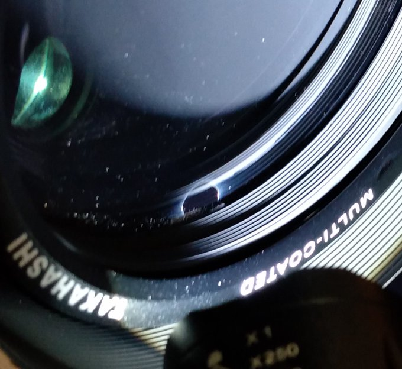

<!DOCTYPE html>
<html>

<head><meta name="generator" content="Hexo 3.8.0">
  <meta charset="utf-8">
  
    <title>
      
        FSQ前玉清掃失敗と坂本真綾ALT | 
            ほしよみ大学生のブログ
    </title>
    <meta name="viewport" content="width=device-width">
    <meta name="description" content="あいさつ拝啓，皆様．今は，西暦2020年，11月26日です．この記事をアップロードする，だいたい5日前のことになります． 「チキチキ前玉清掃の時間です」と意気揚々と準備． 結論だけ書く．">
<meta name="keywords" content="坂本真綾,機材,鏡筒">
<meta property="og:type" content="article">
<meta property="og:title" content="FSQ前玉清掃失敗と坂本真綾ALT">
<meta property="og:url" content="http://dabokun.github.io/2020/12/01/00000042-clean-failure-maaya-alt/index.html">
<meta property="og:site_name" content="ほしよみ大学生のブログ">
<meta property="og:description" content="あいさつ拝啓，皆様．今は，西暦2020年，11月26日です．この記事をアップロードする，だいたい5日前のことになります． 「チキチキ前玉清掃の時間です」と意気揚々と準備． 結論だけ書く．">
<meta property="og:locale" content="ja">
<meta property="og:image" content="http://dabokun.github.io/2020/12/01/00000042-clean-failure-maaya-alt/card.jpg">
<meta property="og:updated_time" content="2021-06-08T16:26:25.099Z">
<meta name="twitter:card" content="summary_large_image">
<meta name="twitter:title" content="FSQ前玉清掃失敗と坂本真綾ALT">
<meta name="twitter:description" content="あいさつ拝啓，皆様．今は，西暦2020年，11月26日です．この記事をアップロードする，だいたい5日前のことになります． 「チキチキ前玉清掃の時間です」と意気揚々と準備． 結論だけ書く．">
<meta name="twitter:image" content="http://dabokun.github.io/2020/12/01/00000042-clean-failure-maaya-alt/card.jpg">
<meta name="twitter:creator" content="@dabo_pic">
      
        <link rel="alternative" href="/atom.xml" title="ほしよみ大学生のブログ" type="application/atom+xml">
        
          
            <link rel="icon" href="/images/favicon.png">
            
              <link rel="stylesheet" href="/css/style.css">
                <!--[if lt IE 9]><script src="//html5shiv.googlecode.com/svn/trunk/html5.js"></script><![endif]-->
                
                  <script data-ad-client="ca-pub-1350688970555904" async src="https://pagead2.googlesyndication.com/pagead/js/adsbygoogle.js"></script>
</head></html>
<body>
  <div id="container">
    <div class="mobile-nav-panel">
	<i class="icon-reorder icon-large"></i>
</div>
<header id="header">
	<h1 class="blog-title">
		<a href="/">ほしよみ大学生のブログ</a>
	</h1>
	<nav class="nav">
		<ul>
			<li><a href="/">Home</a></li><li><a href="/categories">Categories</a></li><li><a href="/tags">Tags</a></li><li><a href="/archives">Archives</a></li><li><a href="/about">About</a></li><li><a href="/work">Work</a></li>
			<li><a id="nav-search-btn" class="nav-icon" title="Search"></a></li>
			<li><a href="https://github.com/dabokun"></a>
			</li>
			<li><a href="https://twitter.com/dabo_pic"></a></li>
			<li><a href="/atom.xml" id="nav-rss-link" class="nav-icon" title="RSS Feed"></a>
			</li>
		</ul>
	</nav>
	<div id="search-form-wrap">
		<form action="//google.com/search" method="get" accept-charset="UTF-8" class="search-form"><input type="search" name="q" class="search-form-input" placeholder="Search"><button type="submit" class="search-form-submit">&#xF002;</button><input type="hidden" name="sitesearch" value="http://dabokun.github.io"></form>
	</div>
</header>
    <div id="main">
      <article id="post-00000042-clean-failure-maaya-alt" class="post">
	<footer class="entry-meta-header">
		<span class="meta-elements date">
			<a href="/2020/12/01/00000042-clean-failure-maaya-alt/" class="article-date">
  <time datetime="2020-12-01T10:30:07.000Z" itemprop="datePublished">2020-12-01</time>
</a>
		</span>
		<span class="meta-elements author">astr0dab0</span>
		<div class="commentscount">
			
			<a href="http://dabokun.github.io/2020/12/01/00000042-clean-failure-maaya-alt/#disqus_thread" class="article-comment-link">Comments</a>
			
		</div>
	</footer>
	
	<header class="entry-header">
		
  
    <h1 class="article-title entry-title" itemprop="name">
      FSQ前玉清掃失敗と坂本真綾ALT
    </h1>
  

	</header>
	<div class="entry-content">
		
		
		<div id="toc" class="toc-article">
			<p class="toc-title">目次</p>
			<ol class="toc"><li class="toc-item toc-level-3"><a class="toc-link" href="#あいさつ"><span class="toc-number">1.</span> <span class="toc-text">あいさつ</span></a></li><li class="toc-item toc-level-3"><a class="toc-link" href="#前玉清掃失敗"><span class="toc-number">2.</span> <span class="toc-text">前玉清掃失敗</span></a></li><li class="toc-item toc-level-3"><a class="toc-link" href="#坂本真綾ALT"><span class="toc-number">3.</span> <span class="toc-text">坂本真綾ALT</span></a></li></ol>
		</div>
		
		<h3 id="あいさつ"><a href="#あいさつ" class="headerlink" title="あいさつ"></a>あいさつ</h3><p>拝啓，皆様．<br>今は，西暦2020年，11月26日です．この記事をアップロードする，だいたい5日前のことになります．</p>
<p>「チキチキ前玉清掃の時間です」と意気揚々と準備．</p>
<p>結論だけ書く．</p>
<a id="more"></a>
<h3 id="前玉清掃失敗"><a href="#前玉清掃失敗" class="headerlink" title="前玉清掃失敗"></a>前玉清掃失敗</h3><p><br><br><br><br><br><br><br><br></p>
<p><strong>失敗した失敗した失敗した失敗した失敗した</strong><br><strong>失敗した失敗した失敗した失敗した失敗した</strong><br><strong>失敗した失敗した失敗した失敗した失敗した</strong><br><strong>失敗した失敗した失敗した失敗した失敗した</strong></p>
<p><strong>あたしは失敗した失敗した失敗した失敗した</strong><br><strong>失敗した失敗した失敗した失敗した失敗した</strong><br><strong>失敗した失敗した失敗したあたしは失敗</strong><br>(<a href="https://dic.nicovideo.jp/a/%E5%A4%B1%E6%95%97%E3%81%97%E3%81%9F%E5%A4%B1%E6%95%97%E3%81%97%E3%81%9F%E5%A4%B1%E6%95%97%E3%81%97%E3%81%9F%E5%A4%B1%E6%95%97%E3%81%97%E3%81%9F%E5%A4%B1%E6%95%97%E3%81%97%E3%81%9F" target="_blank" rel="noopener">元ネタ</a>)</p>
<p>ええ，やらかしましたよ，やらかしましたとも．前玉についた細かいゴミは泡で落とすと良いとどこかで見たような気がしたのです．鏡筒横倒しの状態で指に泡状のクリーナーをつけて適当に前玉に塗りたくった結果，垂れたやつが前玉縁の隙間に入り込んで無事死亡しました．こういう望遠鏡ぶっ壊しは初心者あるあるらしいので，あまり気にしないでいきたいところではありますが，やはり凹みますね（自業自得）．あまり細かい顛末を書くことはできませんが，「しばらく直焦は封印」とだけ申し上げておきたいと思います．</p>
<p>あと色々ありまして現在 Twitter を自粛中です，TL，リプライ，引用RTは一切見ていませんが，DMだけは見ていますので，ご用のある方はそちらまでお願いします．<br>が，12月になりましたので，天体画像処理研究会の活動は裏でのんびりやっていくつもりです．詳しくは<a href="/2020/11/20/00000041-asimproc-start/">前回の記事</a>を御覧ください．</p>
<h3 id="坂本真綾ALT"><a href="#坂本真綾ALT" class="headerlink" title="坂本真綾ALT"></a>坂本真綾ALT</h3><p>あまり辛いことばかり書いても仕方がないので，全く関係ないですが最近行った真綾さんのライブ感想を書いておきます．<br><strong>後日配信があるそうなのでネタバレに注意です．</strong><br><br><br><br><br><br><br><br><br><br><br><br><br><br><br><br><br><br><br><br><br><br><br><br><br><br><br><br><br><br><br><br><br>今回は28日と29日の土日で1枚ずつチケットを取っていたのですが，座席運が全く良くなく（最後尾2列分13席を土日両方とも引くという），また日曜は頭痛がひどかったというのもあって結局土曜日夜公演だけの参加となりました．真綾さんと，同公演のチケットを外した方には，日曜日不参加となってしまい大変申し訳無いです．<br>双眼鏡を持っていきましたが，座席が一個空けなのもあってこれは正解でした．ちょうど画角いっぱいに真綾さんの全身が入る感じ．それから真綾さんのお召し物の柄が随分細かく，ピント合わせの良い指標になりました．真綾さんありがとうございます（）．</p>
<p>以下セットリスト</p>
<p>宇宙の記憶<br>Million Clouds<br>幸せ5<br>私へ<br>逆光（unplugged）<br>躍動</p>
<p>～免疫アップメドレー～<br>スピカ<br>ユッカ<br>CLEAR<br>Gift<br>tune the rainbow<br>光あれ<br>Get No Satisfaction!<br>プラチナ</p>
<p>クローバー<br>いつか旅に出る日</p>
<p>今回はやはり最後の MC（クロアチアでの朝焼けの話題）が印象的でした．朝焼けというのは本当に写真で撮ってもその美しさを表現することは困難で，その美しさは記憶の中にしか残らないと．私も写真を撮る人間ではありますが，写真を撮る，というのは記憶に対する足がかりを作ることだと考えています．記憶そのものを作ることではなく．この朝焼けの話は今回のライブについても同じことが当てはまって，どんなに高性能な録音機材を使ったところで生の音には敵わないのではないかと思うのです．こんな情勢だからこそ，そのナマモノがあるということの大切さ，ありがたさをしみじみと感じることができました．一度しか参加できなかったし，席も最後尾だったけれど，記憶に残るライブだったと思います．<br>曲についてはあまり多くを語ることはしませんが，アチコチ Disc1 の存在を完全に忘れていて最初（ミリクラなんてアチコチに入っていたか…？）などと超失礼なことを思いながら聴いていたのは内緒です．「スピカ」，「tune the rainbow」はライブでは記憶にある限り聴くのは初めてな気がしますので，嬉しかった．「ユッカ」はやはり泣いてしまいます，イントロのメロディが優しすぎるんだよね．「クローバー」と「いつか旅に出る日」は，今後ライブがあるならたくさん歌われるんじゃないかなと思います，特に後者は真綾さんの哲学をよく表していると思いましたし，ライブラストナンバーの定番覇権をとっても良いんじゃないかなと思えました．<br>ライブ会場では誰とも話したりすることはしませんでした．来年3月に横浜アリーナでアニバーサリーライブが決定されましたが，その頃には情勢が少しでも良くなり，また多くの方と交流できることを切に願っています．</p>
<p>それでは．</p>

		
	</div>
	<footer class="article-footer">
		<a href="https://twitter.com/intent/tweet?text=FSQ%E5%89%8D%E7%8E%89%E6%B8%85%E6%8E%83%E5%A4%B1%E6%95%97%E3%81%A8%E5%9D%82%E6%9C%AC%E7%9C%9F%E7%B6%BEALT｜%E3%81%BB%E3%81%97%E3%82%88%E3%81%BF%E5%A4%A7%E5%AD%A6%E7%94%9F%E3%81%AE%E3%83%96%E3%83%AD%E3%82%B0&url=http://dabokun.github.io/2020/12/01/00000042-clean-failure-maaya-alt/" class="twitter-share-button" target="_blank" title="Twitter"></a>
		<script async src="https://platform.twitter.com/widgets.js" charset="utf-8"></script>

		<div id="fb-root"></div>
		<script async defer crossorigin="anonymous" src="https://connect.facebook.net/ja_JP/sdk.js#xfbml=1&version=v4.0"></script>
		<div class="fb-share-button" data-href="http://dabokun.github.io/2020/12/01/00000042-clean-failure-maaya-alt/" data-layout="button_count" data-size="small"><a target="_blank" href="https://www.facebook.com/sharer/sharer.php?u=https%3A%2F%2Fdabokun.github.io%2F&amp;src=sdkpreparse" class="fb-xfbml-parse-ignore">シェア</a></div>
	</footer>
	<footer class="entry-footer">
		<div class="entry-meta-footer">
			<span class="category">
				
  <div class="article-category">
    <a class="article-category-link" href="/categories/equipments/">機材</a>
  </div>

			</span>
			<span class=" tags">
				
  <ul class="article-tag-list"><li class="article-tag-list-item"><a class="article-tag-list-link" href="/tags/maaya-sakamoto/">坂本真綾</a></li><li class="article-tag-list-item"><a class="article-tag-list-link" href="/tags/equipments/">機材</a></li><li class="article-tag-list-item"><a class="article-tag-list-link" href="/tags/telescope/">鏡筒</a></li></ul>

			</span>
		</div>
	</footer>
	
	
<nav id="article-nav">
  
    <a href="/2020/12/06/00000043-asimproc-2020-12/" id="article-nav-newer" class="article-nav-link-wrap">
      <strong class="article-nav-caption">Newer</strong>
      <div class="article-nav-title">
        
          天体画像処理研究会第一回オンラインミーティング
        
      </div>
    </a>
  
  
    <a href="/2020/11/20/00000041-asimproc-start/" id="article-nav-older" class="article-nav-link-wrap">
      <strong class="article-nav-caption">Older</strong>
      <div class="article-nav-title">
        
          天体画像処理研究会を立ち上げました
        
      </div>
    </a>
  
</nav>

	
</article>


<section id="comments">
	<div id="disqus_thread">
		<noscript>Please enable JavaScript to view the <a href="//disqus.com/?ref_noscript">comments powered by
				Disqus.</a></noscript>
	</div>
</section>

    </div>
    <div class="mb-search">
  <form action="//google.com/search" method="get" accept-charset="utf-8">
    <input type="search" name="q" results="0" placeholder="Search">
    <input type="hidden" name="q" value="site:dabokun.github.io">
  </form>
</div>
<footer id="footer">
	<h1 class="footer-blog-title">
		<a href="/">ほしよみ大学生のブログ</a>
	</h1>
	<span class="copyright">
		&copy; 2022 astr0dab0<br>
		Modify from <a href="http://sanographix.github.io/tumblr/apollo/" target="_blank">Apollo</a> theme, designed by <a href="http://www.sanographix.net/" target="_blank">SANOGRAPHIX.NET</a><br>
		Powered by <a href="http://hexo.io/" target="_blank">Hexo</a>
	</span>
</footer>
    
<script>
  var disqus_shortname = 'astr0dab0';
  
  var disqus_url = 'http://dabokun.github.io/2020/12/01/00000042-clean-failure-maaya-alt/';
  
  (function(){
    var dsq = document.createElement('script');
    dsq.type = 'text/javascript';
    dsq.async = true;
    dsq.src = '//go.disqus.com/embed.js';
    (document.getElementsByTagName('head')[0] || document.getElementsByTagName('body')[0]).appendChild(dsq);
  })();
</script>


<script src="//ajax.googleapis.com/ajax/libs/jquery/2.0.3/jquery.min.js"></script>


<link rel="stylesheet" href="/fancybox/jquery.fancybox.css" media="screen" type="text/css">
<script src="/fancybox/jquery.fancybox.pack.js"></script>


<script src="/js/script.js"></script>
  </div>
</body>
</html>